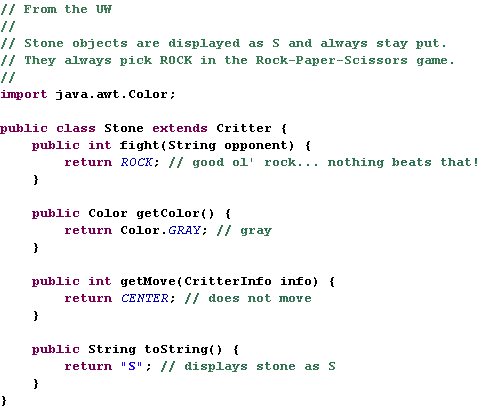

CSC143 - Java II
Computer Programming for Engineers and Scientists
Computer Programming for Engineers and Scientists
(10 points)
The purpose of this assignment is to gain experience with the following concepts:
You will write a set of classes that define the behavior of various animals. You will be provided with several classes that implement a graphical simulation of a 2D world with many animals moving around in it. Different kinds of animals move in different ways; as you write each class, you are defining those differences. On each round of the simulation, each critter is asked which direction it wants to move. On each round, each critter can move one square north, south, east, west, or stay at its current location. Critters move around in a world of finite size, but the world has periodic boundary conditions (going off the end to the right brings you back to the left and vice versa; going off the end to the top brings you back to the bottom and vice versa). The critter world is divided into cells that have integer coordinates. There are 60 cells across and 50 cells up and down. The upper-left cell has coordinates (0, 0), increasing x values move you right and increasing y values move you down.
The code that you will write will not be in control of the overall program's execution. Instead, you are defining a series of objects that become part of a larger system. For example, there are constraints on the movement of a critter. You won't be able to have one of your critters make several moves all at once. The only way a critter can move is to wait for the simulator to ask it for a move. Although this experience can be frustrating, it is a good introduction to the kind of programming we do with objects.
As the simulation runs, animals can collide by moving onto the same location. When two animals collide, they fight to the death in a deadly game of rock-paper-scissors. The winning animal survives and the losing animal is removed from the simulation. The following table summarizes the possible choices each animal can make and which animal will win in each case. If the animals make the same choice, the winner is chosen at random.
There are several supporting files you should download:
Run CritterMain to start the simulation.
Each of the four classes you'll write will extend the provided Critter abstract class. Note that the Critter class implements the interface CritterConstants so that all of your classes will have easy access to the features of the game (e.g the allowed directions of motion).
Four methods (fight, getColor, getMove, and toString) within Critter are abstract. They must be implemented in the classes that you will write.
For example, below is a definition for a class called Stone that is part of the simulation. Stone objects are displayed with the letter S, are gray in color, always stay on the current location (returning CENTER for their move), and always choose the rock in the rock-paper-scissors game.
The CritterConstants interface defines five constants for the various directions, and three additional constants for the three weapons in the rock-paper-scissors game. You can refer to these directly in your code (NORTH, SOUTH, ROCK, etc) because you are extending Critter that implements the interface CritterConstants. Your code should not depend upon the specific values assigned to these constants, although you may assume they will always be of type int. You will lose style points if you fail to use the named constants when appropriate. Your critter can stay on its current location by returning CENTER.
The following are the four critter classes you will implement. Each class must only have one constructor, and that constructor must accept exactly the parameter(s) described in the table. For random moves, each possible choice must be equally likely. To generate random values, take advantage of the Critter static protected field of type Random.
| constructor | public Bear() |
| fighting behavior | always scissors |
| color | color brown (R = 128, G = 128, B = 64) |
| movement behavior | movement behavior alternates between north and west in a zigzag pattern (first north, then west, then north, then west, ...) |
| toString | B |
| constructor | public Lion(int steps) |
| fighting behavior | always paper |
| color | yellow |
| movement behavior | moves the given number of steps in a random direction, then chooses a new random direction and repeats |
| toString | L |
The Lion constructor accepts a parameter representing the distance the Lion will walk in a straight line before choosing a new random direction. For example, a Lion constructed with a parameter value of 8 will use its first 8 moves to walk in a single random direction, then after the 8th move, the Lion will choose a new random direction (which might be the same as the original one), and repeat.
| constructor | public Tiger(Color color) |
| fighting behavior | alternates between scissors and paper (first scissors, then paper, then scissors, then paper, ...) |
| color | the color passed to the constructor |
| movement behavior | first 5 steps south, then 5 steps west, then 5 steps north, then 5 steps east (a clockwise square pattern), then repeats |
| toString | T |
The Tiger constructor accepts a parameter representing the color in which the Tiger should be drawn. This color should be returned each time the getColor method is called on the Tiger. For example, a Tiger constructed with a parameter value of Color.RED will return Color.RED from its getColor method and will therefore appear red on the screen.
| constructor | public Wolf() |
| fighting behavior | you decide |
| color | you decide |
| movement behavior | you decide |
| toString | you decide |
You will decide the behavior of the Wolf class. (Your constructor must accept no parameters as shown above.)
Part of your grade will be based upon writing creative and non-trivial behavior in your Wolf class. The following are some guidelines and hints about how to write an interesting Wolf. Each time a critter is asked to move (each time the getMove method is called), the critter is passed a parameter of type CritterInfo that provides useful information; your Wolf may wish to make use of this information to guide its movement behavior. You can find out what is around the critter by calling getNeighbor and passing one of the direction constants as a parameter. You will be told the display character for whatever is in that location (a "." for an empty cell).
Your Wolf's fighting behavior may want to utilize the parameter to the fight method, opponent, which tells you what kind of critter you are playing against (such as "B" if you are playing against a Bear). You can make your Wolf return any text you like from its toString method (other than null) and any color you like from the getColor method. In fact, critters are asked what display color and character to use on each round of the simulation, so you can have a Wolf that displays itself differently over time. Keep in mind that the toString text is also passed to other animals when they fight your Wolf; you may wish to strategize to try to fool other animals.
Write tests (all within the same unit test class, e.g. TestCritters) to check the correctness of the key features of your classes (Bear, Tiger, Lion, and Wolf). To give you an idea of what you can do, here is the sample code that tests the Stone class.
One method getMove requires a CritterInfo object. You might have noticed that only the Wolf class may take advantage of the CritterInfo parameter passed to getMove. All of the other critters move independently of what is next to them. This means that you can test getMove for all classes except possibly Wolf by passing null to getMove.
Of course, it is strongly recommended that your implementation of getMove in Wolf uses the CritterInfo parameter. Since CritterInfo is an interface, getMove must take an instance of a class that implements CritterInfo. In the provided code, such a class is buried within the CritterModel class. You can't access it in your unit test class. Even if it was available, it would not be very helpful to test getMove. In the safari game, critters don't have neighbors most of the time. Instead create your own implementation of CritterInfo (e.g. call it CritterInfoForTest). Make it so that it makes the testing of getMove in the Wolf class relatively straightforward.
The provided GUI can run even if you haven't completed all of the required critter classes. To do this, edit the file CritterMain.java and comment out lines that refer to critter types you have not yet written. For example, commenting out the following line would prevent the GUI from trying to place its usual 25 Tiger objects in the simulation:
model.add(25, Tiger.class);
The first three types of critters increase in difficulty from Bear to Lion to Tiger. We recommend that you write the Bear first. Look at the Stone.java file as an example of the general structure of your classes. Any critter class you write will not compile without having implementations of all methods from the Critter interface.
However, if you want to write some of the methods and leave others for later, write a "stub" version of the others that returns a meaningless value (for example, always return CENTER if you don't want to write the Bear's movement code yet). In the case of each animal, it will be impossible to implement the behavior if you don't have the right state in your object. As you start writing each class, spend some time thinking about what state will be needed to achieve the desired behavior.
Some of the style points for this assignment will be awarded on the basis of how much energy and creativity you put into defining an interesting Wolf class. These points allow us to reward the students who spend time writing an interesting critter definition. Style points will also be awarded on the basis of your ability to express each critter's operations simply and clearly. Your objects should be well encapsulated. You should follow past stylistic guidelines about indentation, whitespace, identifiers, and localizing variables. You should place comments at the beginning of each class. Each class should be in its own file. Document each critter's behavior in comments at the top of its file or at the top of each method.
Your program has to be your own.